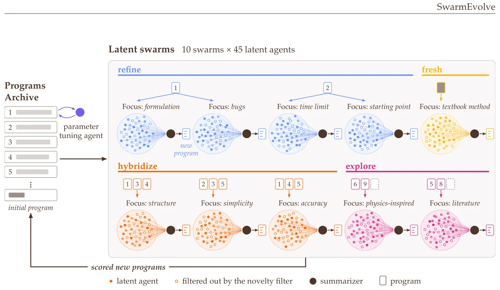
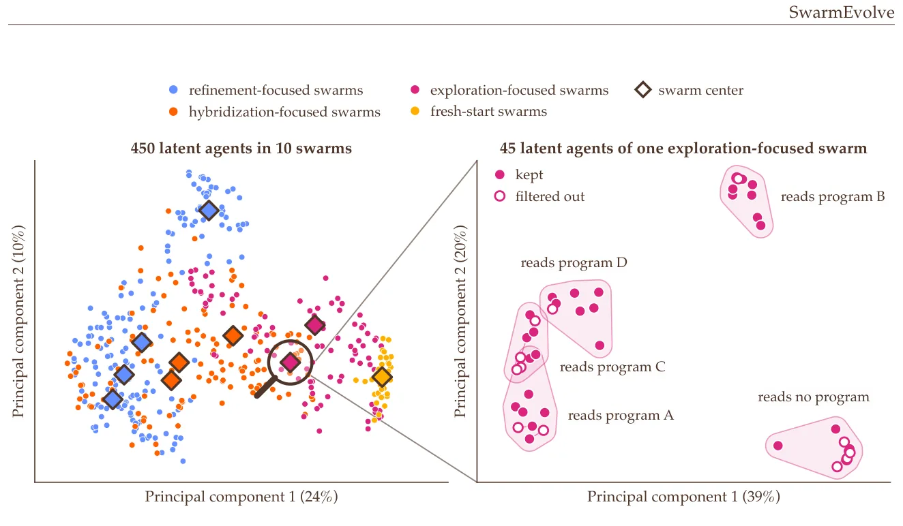
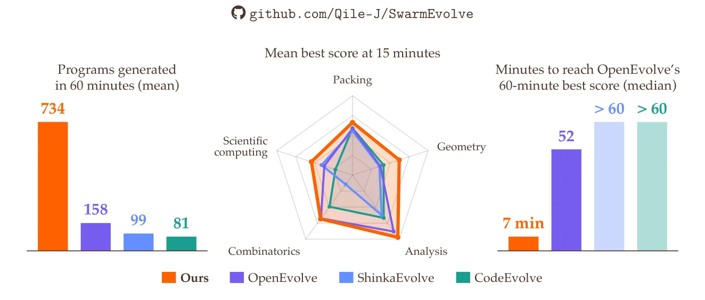
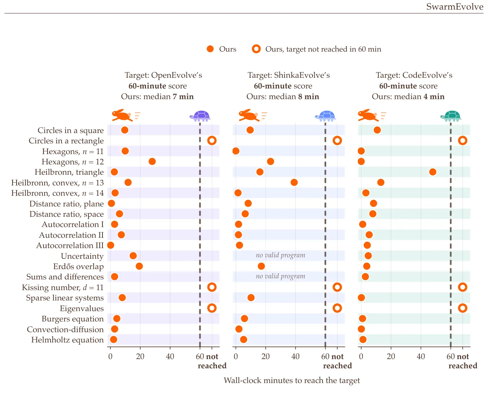

O gargalo da busca evolutiva com LLMs
Muitos problemas em matemática e computação científica podem ser formulados como uma busca por um bom programa. Exemplos clássicos incluem regressão simbólica, otimização de constantes em desigualdades e a construção de solucionadores robustos para equações diferenciais. A abordagem tradicional para essa busca é a computação evolutiva, que melhora iterativamente programas candidatos através de variação, cruzamento e seleção. Recentemente, Modelos de Linguagem de Grande Escala (LLMs) têm sido utilizados como operadores de mutação e cruzamento nesses processos. Frameworks como FunSearch e AlphaEvolve demonstraram progresso significativo, encontrando novas construções de conjuntos de cap e algoritmos eficientes para multiplicação de matrizes.
Apesar do sucesso, esses frameworks enfrentam um gargalo crítico: lentidão e alto custo. Cada agente de LLM gera uma longa cadeia de pensamento textual em cada rodada de refinamento. Para manter a diversidade da população e explorar o espaço de soluções adequadamente, o processo deve repetir essa geração muitas vezes. O contexto do LLM cresce constantemente com o arquivo de soluções, o feedback do avaliador e as mensagens textuais entre agentes. Isso torna inviável escalar para centenas de agentes ou usar modelos maiores sem um orçamento de computação proibitivo. A pergunta central que os autores levantam é se enxames de agentes de baixo custo podem tornar a busca evolutiva mais rápida e eficaz.
A proposta: Raciocínio em espaço latente
O SwarmEvolve é um framework de busca evolutiva que supera o gargalo textual ao operar inteiramente no espaço latente. Em vez de gerar tokens de texto, os agentes raciocinam usando vetores contínuos. A comunicação entre agentes ocorre através da troca de KV caches (chaves e valores), que são os estados internos da atenção do modelo. Essa abordagem se baseia em trabalhos anteriores sobre raciocínio latente e comunicação latente, onde LLMs trocam embeddings de tokens ou ativações internas sem decodificação para texto.
A vantagem principal é a eficiência. O raciocínio em espaço latente é muito mais barato computacionalmente do que a geração de texto. Isso permite que o SwarmEvolve execute centenas de agentes em cada rodada evolutiva. Os agentes são organizados em enxames distintos, e cada enxame tem um foco específico, como implementar uma construção da literatura ou usar um método de livro didático. Essa estrutura permite uma exploração massiva do espaço de design em paralelo, algo impraticável com métodos baseados em texto que exigem geração sequencial e verbose.

Mecanismo: Como os agentes colaboram
O funcionamento do SwarmEvolve pode ser dividido em etapas claras. Em cada rodada, o framework lança múltiplos enxames de agentes latentes. Cada enxame seleciona programas pais de um arquivo de archive e recebe um prompt de foco para refinar, hibridizar, explorar ou começar do zero. Dentro de cada enxame, os agentes realizam 40 passos de raciocínio latente. Esses passos atualizam os estados ocultos dos agentes sem produzir saída textual, permitindo que eles processem informações complexas de forma rápida.
Para garantir que o enxame não converja prematuramente para soluções similares, um filtro de novidade é aplicado. Este filtro mantém apenas os agentes cujas trajetórias de raciocínio latente estão mais distantes entre si, medido pela distância cosseno dos vetores de estado oculto. Isso assegura que diferentes perspectivas sejam preservadas. Em seguida, um agente resumo (summarizer) para cada enxame recebe os KV caches combinados de todos os agentes mantidos. O resumo então decodifica essas informações latentes para gerar um novo programa candidato.
Cruzamento natural no espaço latente
Uma característica distintiva do SwarmEvolve é como o cruzamento de ideias ocorre. Em métodos tradicionais, o cruzamento é muitas vezes uma operação sintática sobre o código ou texto. No SwarmEvolve, o cruzamento acontece naturalmente no espaço latente. Ao receber os KV caches de múltiplos agentes, o agente resumo integra as informações de diferentes perspectivas. Os agentes de cada enxame ocupam regiões distintas no espaço latente, o que significa que eles estão explorando aspectos diferentes do problema. A combinação desses estados permite que o resumo sintetize soluções que combinam o melhor de cada agente, sem a perda de informação que poderia ocorrer na tradução para texto e de volta.
Essa arquitetura também permite que o sistema escale horizontalmente. Como a comunicação é baseada em troca de caches e não em geração de texto, o overhead de comunicação é mínimo. Isso contrasta com frameworks que usam debates multiagente ou memória compartilhada textual, onde o contexto cresce exponencialmente e degrada a qualidade do raciocínio devido ao limite de tokens e ao ruído informativo.

Avaliação experimental e resultados
Os autores avaliaram o SwarmEvolve em 21 problemas de cinco domínios: empacotamento, geometria, análise, combinatória e computação científica. Dezesseis problemas vieram do benchmark do AlphaEvolve, enquanto cinco foram desenhados para testar sistemas lineares esparsos, autovalores de matrizes não normais e equações diferenciais parciais (Burgers, conveção-difusão e Helmholtz). A comparação foi feita contra três frameworks state-of-the-art: OpenEvolve, ShinkaEvolve e CodeEvolve. Cada framework foi executado por 60 minutos em uma única GPU, avaliando oito programas em paralelo.
Os resultados mostram que o SwarmEvolve alcança a maior pontuação média com todos os modelos testados (Qwen3 8B, 14B e 32B-FP8). Notavelmente, o SwarmEvolve com o modelo menor Qwen3 8B superou todos os baselines rodando o modelo maior Qwen3 32B-FP8. Em termos de velocidade, o SwarmEvolve atingiu as melhores pontuações em uma mediana de apenas 3 a 8 minutos. Em contraste, os frameworks baseados em texto levaram 60 minutos para atingir scores similares. Em vários problemas, o SwarmEvolve com Qwen3 8B melhorou as soluções que o AlphaEvolve encontrou usando modelos de fronteira.


Análise de ablação e escalabilidade
Os autores realizaram análises de ablação para entender as contribuições de cada componente. Quando o raciocínio latente foi substituído por raciocínio textual, as pontuações caíram significativamente, mesmo quando os agentes tinham um orçamento maior de tokens de texto. Isso confirma que a eficiência não vem apenas de economizar tokens, mas da natureza do raciocínio em vetores contínuos, que permite uma exploração mais densa do espaço de soluções. Além disso, aumentar o número de agentes em um enxame melhorou o desempenho inicial da busca, explorando mais do espaço de design nas primeiras rodadas. Isso é crucial para problemas onde cada avaliação é cara, como simulações científicas.
O scaling do número de agentes também mostrou que, embora enxames maiores ofereçam uma vantagem inicial, no final da busca todos os tamanhos de enxame convergem para scores similares. Isso sugere que a diversidade inicial é o fator crítico para o sucesso rápido do SwarmEvolve. A escalabilidade do método também foi discutida: embora a memória para os KV caches cresça linearmente com o número de agentes, passos de raciocínio e camadas, a arquitetura permite que centenas de agentes rodem em uma única GPU moderna, algo que seria impossível com geração textual.
Limitações e trabalho futuro
Apesar dos avanços, o SwarmEvolve possui limitações importantes. Primeiro, todos os agentes latentes e resumos devem compartilhar o mesmo modelo de LLM. Isso ocorre porque um resumo só pode ler diretamente os KV caches de seus agentes se eles provierem do mesmo modelo. Traduções aprendidas entre KV caches de diferentes modelos poderiam estender o framework para enxames heterogêneos, mas isso ainda é uma área de pesquisa aberta. Segundo, a implementação atual requer LLMs com atenção padrão. Modelos com atenção linear, espaços de estado ou híbridos comprimem o passado em um estado de tamanho fixo, o que exigiria novos métodos para mesclar os estados de vários agentes.
Considerações finais
O SwarmEvolve demonstra que a busca evolutiva pode ser rápida, barata e poderosa simultaneamente. Ao pular a etapa lenta de escrita de texto, os agentes latentes permitem que uma única GPU execute centenas de agentes em cada rodada. Isso resulta em uma exploração muito maior do espaço de design no mesmo tempo, levando a programas melhores mais cedo na execução. O trabalho abre caminho para aplicações em matemática, onde enxames podem buscar novas construções e estratégias de prova, e em computação científica, para melhorar solucionadores de EDPs e métodos numéricos. A principal conclusão é que a descoberta científica impulsionada por IA não precisa necessariamente de modelos frontais ou grandes orçamentos de computação; enxames de pequenos agentes latentes podem tornar esse tipo de busca acessível e amplamente disponível.
O que fica
- Agentes latentes raciocinam sem gerar texto, trocando apenas KV caches, o que reduz drasticamente o tempo de inferência.
- Enxames de agentes exploram o espaço de soluções em paralelo, mantendo diversidade via filtragem por distância latente.
- O framework atinge scores superiores em 21 problemas científicos em 3-8 minutos, contra 60 minutos de métodos baseados em texto.
- Limitações incluem dependência de atenção padrão e crescimento linear da memória com o número de agentes.
Paper original: SwarmEvolve: Latent Agent Swarms for Evolutionary Discovery and Optimization
Comentários
Nenhum comentário ainda. Seja o primeiro.